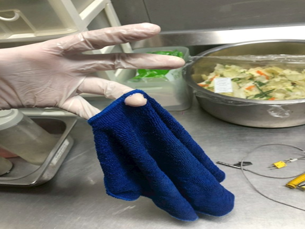
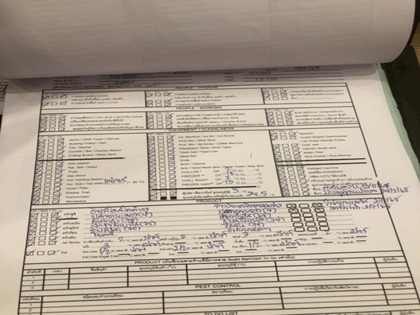
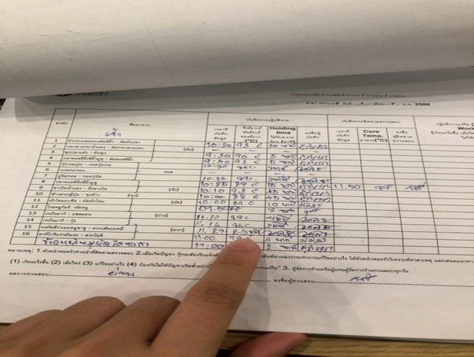
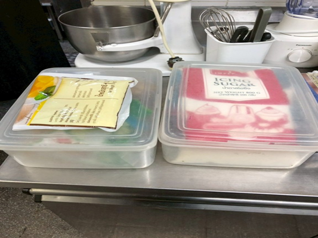
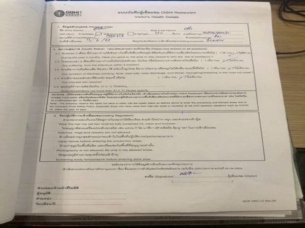

G.Sanitation & Operation Management
| NO | Evidence | Not Complied With Standard | Issue Type |
|---|---|---|---|
| 1 | ไม่มีรูปภาพ | พบอาหาร/ เมนูที่จัดเสิร์ฟให้ลูกค้าใช้ระยะเวลาเกินมาตรฐาน Service Time |
Normal |
| 2 |  | พบผ้าทำความสะอาดสกปรกเป็นเชื้อรา/ ขาดชำรุดมีเศษชิ้นส่วนเสี่ยงต่อการหลุดปนเปื้อนไปในวัตถุดิบ/ ผลิตภัณฑ์ |
Critical |
| 3 |  | พบการลงบันทึกเอกสารไม่ครบถ้วน (เอกสาร PEP 9/7/2025 ไม่ลงบันทึกอุณหภูมิเครื่องเย็นในรอบบ่าย) |
Normal |
| 4 |  | ไมพบการทวนสอบจุด CCP ของพนักงานและทีมงานผู้จัดการ |
Normal |
| 5 | ไม่มีรูปภาพ | พบ ไม่เตรียมสบู่ล้างมือ แอลกกอฮอล์ น้ำยาฆ่าเชื้อ กระดาษเช็ดมือ ไว้ในจุดม็อบบซิงค์ หรือจุดล้างที่กำหนด |
Normal |
| 6 |  | พบยังไม่มีการดำเนินการติดป้าย Allergen หรือ จัดวางสินค้าแยกตาม Allergen |
Normal |
| 7 |  | พบเอกสาร Service Report ของSupplier บันทึกไม่สมบูรณ์ เช่น ไม่มีการระบุ layout บ้านแมลงสาบ |
Normal |